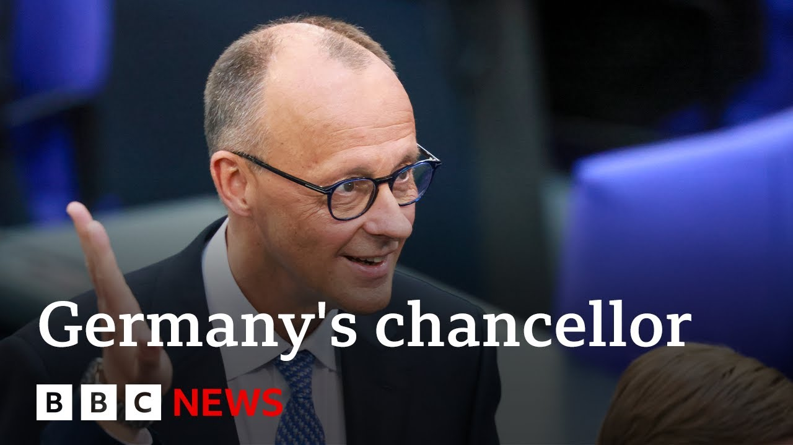

来B站一起耍【Global每日英语简报】
【德国弗里德里希·梅尔茨在经历历史性挫败后赢得总理投票 | BBC新闻】
Summary: Germany has a new chancellor, Friedrich Merz, who secured his position after a chaotic second vote following an initial defeat, marking an embarrassing start to his term.
摘要： 德国迎来新总理弗里德里希·梅尔茨，他在首次投票失败后通过混乱的二次投票艰难胜出，这为其任期开启了尴尬的开端。

⏱️ Estimated Reading Time: 6 min
Welcome back.
欢迎回来。
There is a new chancellor in Germany.
德国迎来了一位新总理。
In the last few minutes, Friedri Mets has been formally confirmed in his position, but it has not been straightforward for the Conservative leader.
就在几分钟前，弗里德里希·梅尔茨正式确认当选，但这位保守党领袖的胜选之路并不顺利。
He lost a confidence vote this morning.
他今早输掉了一场信任投票。
He was six votes short of the 316 vote majority that he needed.
他距离所需的316票多数席位还差6票。
We are still uh to hear from Friedrich May.
我们仍在等待弗里德里希·梅尔茨的回应。
The result has only just been announced in the Bundustar.
联邦议院刚刚宣布了这一结果。
This was the second vote that was arranged hurriedly uh this afternoon.
这是今天下午匆忙安排的第二次投票。
So let's cross live to our correspondent in Berlin, Jess Parker.
现在让我们连线驻柏林记者杰斯·帕克。
And a sigh of relief all round, Jess.
杰斯，各方总算松了一口气。
No doubt.
毫无疑问。
Yes.
是的。
So just happened, just broken here in the Bundesag.
联邦议院刚刚发生了这一突发情况。
It looks like Friedri Mertz has made it through the second time around.
看来弗里德里希·梅尔茨在第二轮投票中成功过关。
What a fascinating and chaotic day it has been.
这是多么戏剧性且混乱的一天。
To refresh people's memories, this morning we were expecting Friedrich Mertz from the center right CDU party to be voted in without much fuss because he had a coalition supposedly with the majority and then the result came through.
回顾今早，我们原以为中右翼基民盟的弗里德里希·梅尔茨会轻松当选，因为他据称拥有多数联盟支持，但结果出炉时——
Bam.
砰。
He hadn't made it through who was six votes short of a majority.
他未能过关，距离多数席位差6票。
There's been endless speculation as to how that happened.
外界对此有无数猜测。
Which disgruntled MPs from within the coalition might have dissented.
可能是联盟内哪些不满的议员投了反对票。
But then there was a lot of conversations going on behind closed doors.
但随后各方进行了大量闭门磋商。
They went for it a second time and it seems that whoever decided not to support Friedick Mertz the first time around, well, a few people have changed their minds and he has made it through.
他们进行了第二轮投票，似乎那些首轮未支持梅尔茨的人中有部分改变了主意，使他最终胜出。
But a hugely embarrassing day for Friedrich Mertz, he has been trying to project strength and certainty.
但对梅尔茨而言这是极其尴尬的一天，他本欲展现力量与决断。
This antidote to the last divided government.
作为对上届分裂政府的解药。
This is not how he wanted to start his term in power.
这绝非他理想中的权力开局。
And I think it has made him look politically weak.
我认为这让他显得政治软弱。
This was the first time a wouldbe chancellor failed to secure a majority in 76 years of the German Republic.
这是德意志共和国76年来首位候任总理未能获得多数支持。
Jess, it's not the ideal start as you say.
杰斯，如你所说这不是理想开局。
If he is now to to form this this this new cabinet and take over, is he weakened by the loss of that first vote today?
若他现在要组建新内阁并接管权力，首轮投票失利是否削弱了他的威信？
Yes.
是的。
So as you say um it is not exactly how they wanted things uh to go today.
正如你所说，今天事态发展完全偏离了他们的预期。
Feredric Mertz was already supposed to have gone to see the president come back to be sworn in.
弗里德里希·梅尔茨本该已见过总统回来宣誓就职。
As you say he was lined up uh with his cabinet uh members of his cabinet.
如你所言，他本应与内阁成员一同就位。
Yesterday I was there at an event here in uh Berlin at an old gas works building that they were signing the coalition deal from different members of the different parties uh to say that they had come to this agreement and it all looked like it was going to go very smoothly.
昨天我在柏林一座老煤气厂建筑见证了各党派成员签署联盟协议，当时一切看似进展顺利。
I think a question now though for Friedri Mertz.
但我认为现在梅尔茨面临质疑。
He's struggled to get through as chancellor despite having yes a narrow majority in parliament with this coalition but a majority nonetheless.
尽管他凭借联盟在议会拥有微弱多数，却仍艰难当选总理。
Does this mean he's going to struggle to get key contentious legislation through this parliament?
这是否意味着他将难以推动关键争议法案通过？
And there'll also be the big question as yet an answer because it's a secret ballot here.
另一个悬而未决的问题是——由于投票保密——
Who were these people who voted uh against him or didn't vote for him?
哪些人投了反对票或未支持他？
Were they members of his own conservative CDU who don't like his leadership style?
是否是他所在的保守派基民盟中不满其领导风格的成员？
Remember, this is a man who took three goes to become leader of his party.
别忘了，此人历经三次尝试才当选党魁。
So, there have been lots of questions over his popularity within the party.
因此党内对其支持度早有质疑。
Or were they figures from within the center left SPD dissatisfied with their leadership or indeed the coalition agreement?
或是中左翼社民党中对自身领导层或联盟协议不满的人士？
We don't know.
我们不得而知。
But it's an uncomfortable moment for the new chancellor.
但对新总理来说这是个难堪时刻。
He'll hope to try and get back on track now.
他现在希望重回正轨。
He's supposed to be whizzing off to Paris and Warsaw tomorrow as part of a big tour to try and rebuild frayed ties as he sees it with important European partners.
按计划他明日将快速访问巴黎和华沙，开启修复与重要欧洲伙伴关系的行程。
Uh but Paris and Warsaw will have noticed what has happened and it's all pretty embarrassing for the new chancellor.
但巴黎和华沙势必已注意到此事，这对新总理而言相当尴尬。
Jess Parker in Berlin.
柏林记者杰斯·帕克。
Thank you very much for that.
非常感谢你的报道。